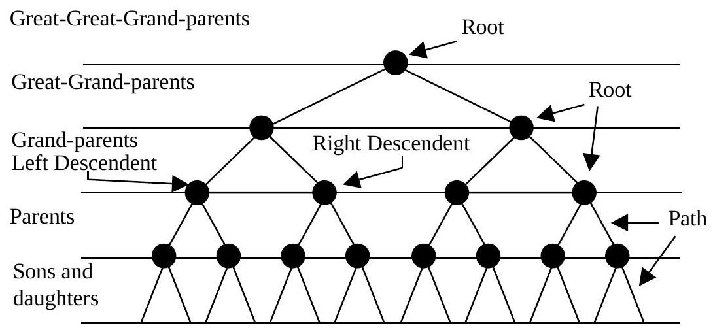

Chapter 8 : Data Structures (II)
Chapter Objectives
At the completion of this chapter, you would have learnt:
- how to acquire the ability to manipulate or to use the different types if data structures;
- how to construct and traverse a binary tree;
- comparison of data structures.
8.1 Introduction
So far, we have been studying mainly linear types of data structures: strings, arrays, lists, stacks and queues. This section defines a non-linear data structure called a tree. This structure is mainly used to represent data containing a hierarchical relationship between elements. E.g. records, family trees and tables of contents.
First we investigate a special kind of tree, called a binary tree, which can be easily maintained in the computer. Although such a tree may seem to be very restrictive, we will see later in the section that more general trees may be viewed as binary trees.
8.2 Tree
Natural Tree
What has a natural tree got to do with a computer?
Try a pseudo-code to get the apples and return to the ground.
A natural tree
Computer tree
A simplified model of a real tree. Where each node has at most two others below it. This is a binary tree.
The family tree model
The countries Malaysia, Namibia, Mauritius, Bahrain, Hong Kong, Pakistan, Sri Lanka, Botswana, Singapore and India are to be placed in an alphabetical order using pointers.
The diagram below is a complete, 'linkages' of all the countries.
The tree diagram completed
Further Example of Tree Diagram
The text "TREE DIAGRAMS ARE QUITE EASY WHEN YOU KNOW HOW." is to be represented in the form of a tree.
[Image: ch8-tree-text.jpg - Download Failed]
Question: Can you understand the logic of the binary tree?
8.3 Tables
In tables, there are basically 4 types of pointers:
- Left Pointer;
- Right Pointer;
- Back Pointer/Parent Pointer;
- Trace Pointer.
The Pointers point to the left, right of the tree trace where they come from or to the next node of the tree. This to preserve the structure of the tree.
The node number takes positive integers and '-1' has special meaning (usually indicating null/no pointer).
Table representation of the Countries tree:
| NODE | DATUM | LP | RP |
|---|---|---|---|
| 1 | Malaysia | 4 | 2 |
| 2 | Namibia | 3 | 6 |
| 3 | Mauritius | -1 | -1 |
| 4 | Bahrain | -1 | 5 |
| 5 | Hong Kong | 8 | 10 |
| 6 | Pakistan | -1 | 7 |
| 7 | Sri Lanka | 9 | -1 |
| 8 | Botswana | -1 | -1 |
| 9 | Singapore | -1 | -1 |
| 10 | India | -1 | -1 |
The above tree is mapped into arrays to give the following:
Data Array:
[Malaysia, Namibia, Mauritius, Bahrain, Hong Kong, Pakistan, Sri Lanka, Botswana, Singapore, India]Pointer Array (LP, RP):
Using the full set of pointers (LP, RP, Back, Trace - Note: Back/Trace not explicitly shown in diagram/table):
Pointer Array (LP, RP, BP, TP):
The Back / Trace Pointer
[Image: ch8-back-trace-pointer.jpg - Download Failed]
The Pointers
8.4 Binary Trees
A binary tree T is defined as finite set of elements, called nodes such that:
- T is empty (called the null tree or empty tree), or
- T contains a distinguished node R, called the root of T, and the remaining nodes of T form an ordered pair of disjoint binary trees T1 and T2.
If T does contain a root R, then the two trees T1 and T2 are called, respectively, the left and right subtrees of R. If T1 is non-empty, then its root is called the left successor of R; similarly, if T2 is non-empty, then its root is called the right successor of R.
Example: Software Tree
[Image: ch8-binary-tree-software.jpg - Download Failed]
A binary tree T is frequently presented by means of a diagram. Specifically, the diagram above represents a binary tree T as follows.
T consists of 8 nodes, represented by the letters s through e.
The root of T is the node s at the top of the diagram.
A left-downward slanted line from a node s indicate a left successor of s and a right-downward slanted line from s indicates a right successor of s.
Observe that:
- o is a left successor and t is a right successor of the node s.
- The left subtree of the root s consists of the nodes o, f, t, w, a and e, and the right subtree of s consists of the nodes t and w.
8.5 Traversing of Binary Trees
There are three standard ways of traversing a binary tree T with root R. These three algorithms, called preorder, inorder and postorder, are as follows:
Preorder:
- Process the root R.
- Traverse the left subtree of R in preorder.
- Traverse the right subtree of R in preorder.
Inorder:
- Traverse the left subtree of R in inorder.
- Process the root R.
- Traverse the right subtree of R in inorder.
Postorder:
- Traverse the left subtree of R in postorder.
- Traverse the right subtree of R in postorder.
- Process the root R.